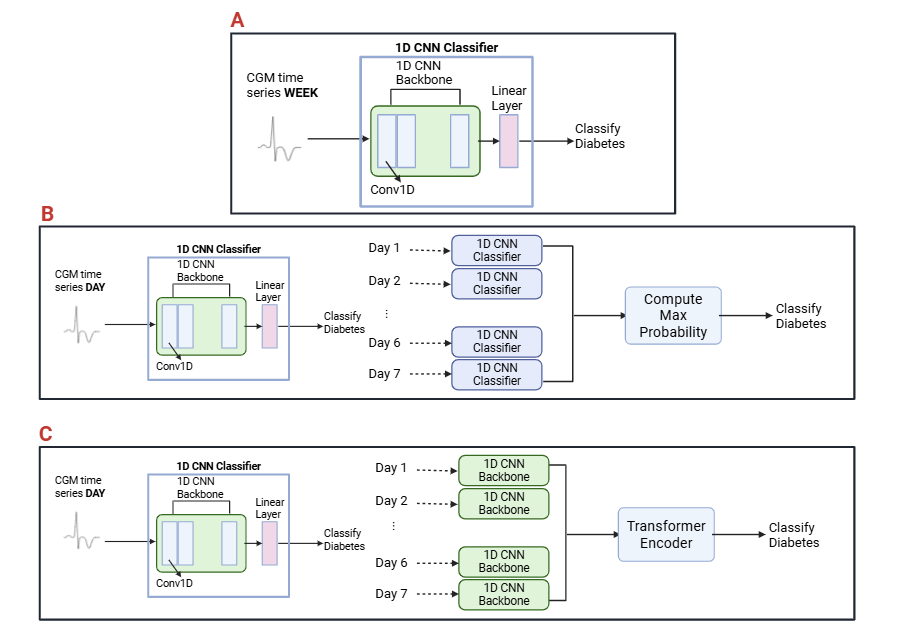
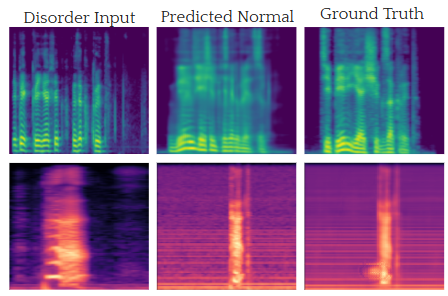
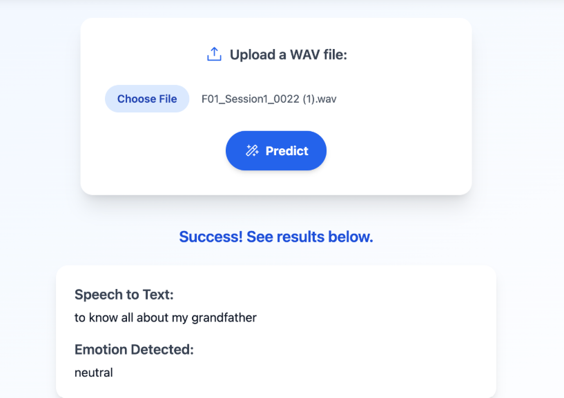
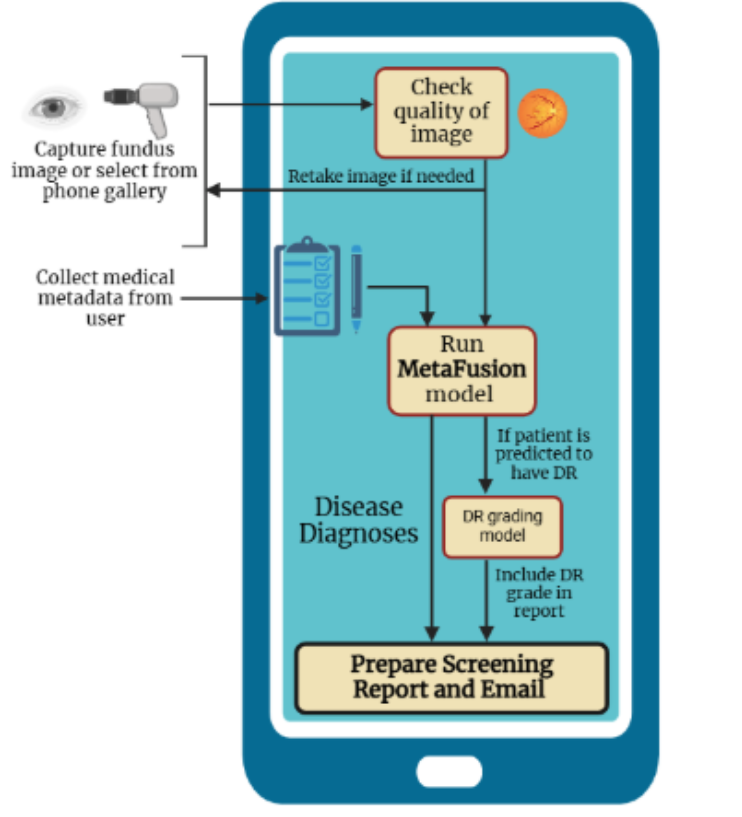
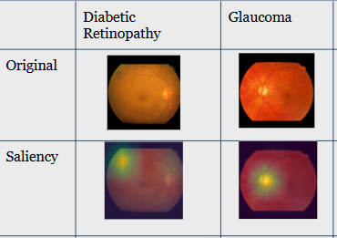

QTIM Lab Intern (Sept 2025)
- Research Intern at Quantitative Translational Imaging in Medicine Lab @ CU Denver
- Project 1: AI-based diabetes progression prediction based on continuous glucose monitoring data from wearable sensors
- Our work shows that compared to using HbA1c, which remains the standard for diagnosing diabetes, applying deep learning to continuous glucose monitoring data can provide more accurate detection of diabetes progression from healthy and prediabetic individuals to those managing the disease with oral medication.
- Project 2: Multimodal AI-based diabetes progression [TO DO]

MIT Beaver Works Summer Institute Medlytics (July - October 2025)
- Selected for MIT BWSI Medlytics summer internship, where we learned about applications of AI and data analysis for medical data.
- Dysarthria is a motor speech disorder that results in slow and often incomprehensible speech. Speech intelligibility significantly impacts communication, leading to barriers in social interactions.
- We worked in a team of 4 to build a unified AI-based multilingual framework and web app to help dysarthric patients communicate effectively with dysarthria detection, severity classification, clean speech generation, speech-to-text conversion, and voice cloning.
- This work demonstrates a scalable, cross-lingual approach to diagnosing and supporting dysarthric patients.
- Accepted for poster presentation to Biomedical Engineering Society Annual Meeting 2025


Stanford AIMI Research Interns (June 2025)
- Selected for Stanford Artificial Intelligence in Medical Imaging Summer Research Internship.
- Explored applications of AI for classification, segmentation, and localization of pneumonia from chest X-rays.
- At the final symposium, all projects were judged by Stanford faculty and our teams won first and second places.
- [poster image]

InSight: AI-based retinal disease screening tool (June 2025)
- Developed InSight, an AI-based screening tool aimed at improving early detection of five major eye diseases — age-related macular degeneration, glaucoma, diabetic retinopathy, macular edema, and pathological myopia.
- These conditions collectively affect over 782 million people worldwide, yet access to screening remains limited in middle and low-income countries.
- Because many of these diseases are asymptomatic in their early stages, patients often miss the window for treatment. Currently, over 90% of the world’s blind population lives in lower-income regions.
- InSight integrates patient metadata with fundus images to enable accurate, real-time diagnosis through a three-stage pipeline: (1) Image Quality Assessment Model, (2) Multimodal Five-Disease Diagnosis Model, (3) Diabetic Retinopathy Severity Grading.
- The multitask model demonstrated strong generalizability across varied imaging conditions (lab-captured and mobile-captured fundus images) while detecting five diseases simultaneously.
- These results highlight InSight’s potential as a lightweight, accessible AI screening tool adaptable to both clinical and mobile-based applications.
- We presented our work on InSight and won first place at the county science fair, invited to the California Science & Engineering Fair (top 15 projects out of ~350 in Alameda County), and recognized with the “Outstanding AI Innovation” Award.
- [poster image]



MetaFusion (Apr 2025)
Developed novel multimodal fusion method. Accepted for presentation at IEEE ISBI 2025.
Mediseeker (2024)
Developed three-stage drug discovery pipeline. Submitted to JHU Global Health Leaders Conference.
Tissue of Origin for CUP (2023)
AI-based tissue origin detection using miRNA. Published in Journal of Internet Medical Research.
Lend me your ear (2023)
Realtime speech enhancement and separation using Conv-TasNet. First Place Winner in County, State Honorable Mention.
Connect Four (2022)
Reinforcement learning–based AI Player for Connect Four. Grand Sweepstakes in County Fair, 3rd place in state.